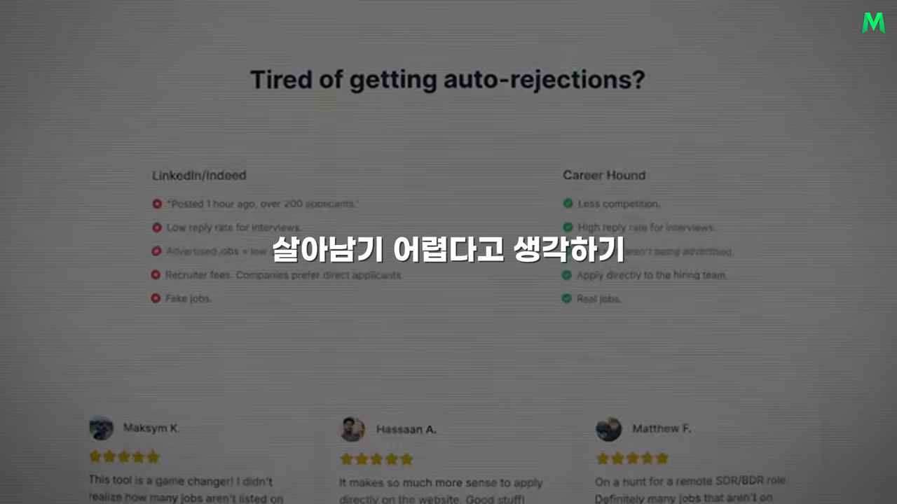
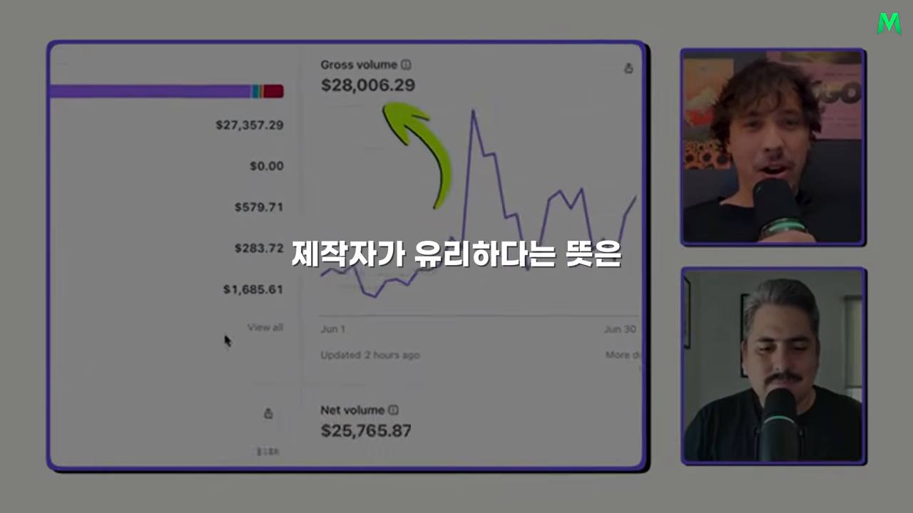
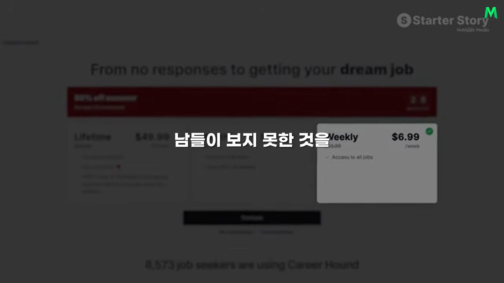
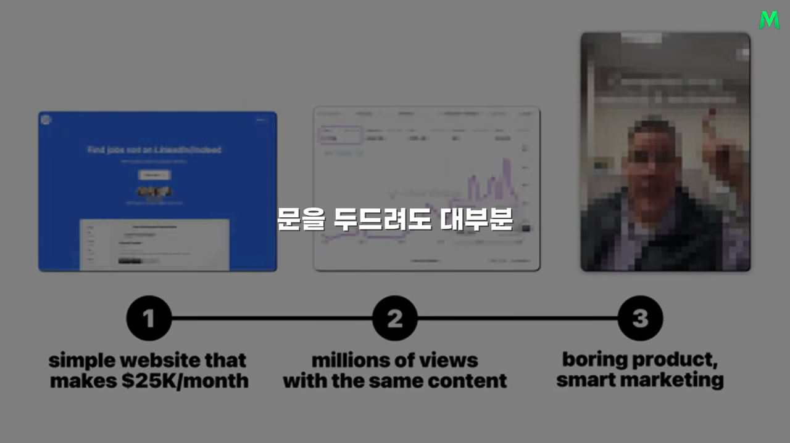
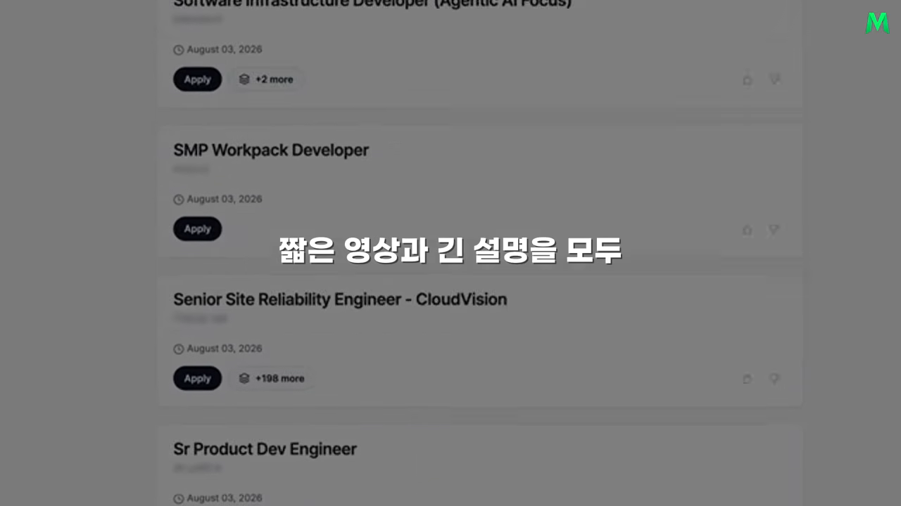
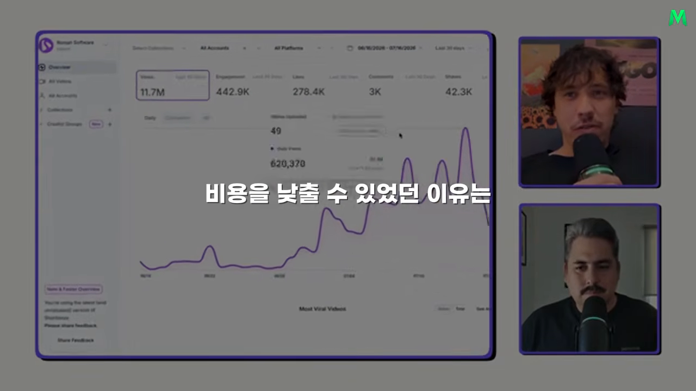
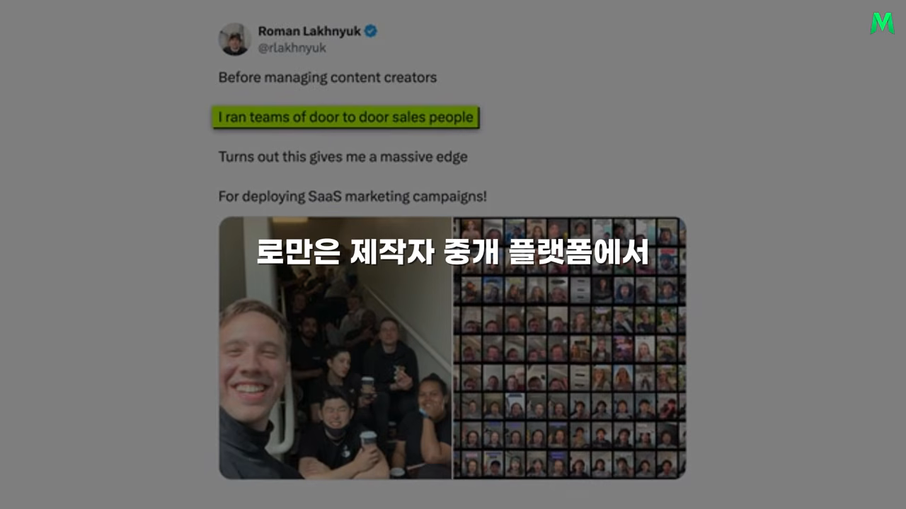

평범한 채용 사이트, 숫자로 보면
Career Hound는 여러 회사가 자기 홈페이지에 직접 올린 채용 공고를 모아서 한곳에 보여 주는 사이트예요. 링크드인이나 인디드 같은 큰 플랫폼에 올라오지 않은 공고를 찾을 수 있다는 게 내세우는 점이에요. 기능만 보면 누구나 한 번쯤 써 본 채용 사이트와 크게 다르지 않아요.

숫자로 보면
영상 제목은 '월 3천만원', 본문 내레이션은 '약 4천만 원에 가까운 매출'이라고 해요. 둘 다 내레이터가 달러를 원화로 바꾼 값이에요. 원래 인터뷰와 화면 속 대시보드에 나온 달러 금액은 이래요.
| 항목 | 원래 인터뷰 | 이 영상의 내레이션 |
|---|---|---|
| 지난달 매출 | 총매출 약 2만 8천 달러, 순매출 약 2만 5,700달러 | 약 4천만 원에 가까운 매출 (제목은 월 3천만원) |
| 월 반복 매출 | 약 1만 2천 달러 | 약 1,700만 원 |
| 유료 구독자 | 활성 구독 779명 (전체 사용자 8천 명 이상) | 약 700명 |
| 고객 한 명의 평균 결제액 | 50달러 | 약 7만 원 |
| 월간 이탈률 | 31% | 약 31% |
| 한 달 소셜 조회수 | 1,170만 회 | 약 1,170만 회 |

이 사업에는 구조적인 약점이 있어요. 고객이 원하는 일자리를 찾으면 서비스를 더 쓸 이유가 없어져요. 그래서 월간 이탈률이 31%로 높아요. 그래도 새로운 구직자가 끊임없이 들어오기 때문에 사업이 유지돼요.
요금은 주간, 월간, 연간으로 나뉘어요. 연간 결제는 한 번에 큰돈이 들어오지만 월 반복 매출에는 한 달 몫만 잡혀요. 그래서 실제 한 달 총매출이 월 반복 매출보다 크게 나와요.

개인적인 문제에서 시작했어요
Roman은 오래전부터 창업을 하고 싶었고, 온라인에서 만난 파트너와 여러 아이디어를 고민하고 있었어요. 그러다 파트너가 일자리를 찾은 방법을 알게 됐어요. 일반 채용 플랫폼만 뒤지지 않고, 회사 홈페이지에 직접 올라온 공고를 자동으로 모으는 프로그램을 만들어 썼던 거예요. 둘은 이 방법을 다른 구직자도 쓸 수 있는 제품으로 바꿨어요.
처음 목표는 각자 한 달에 1천 달러(영상에서는 약 140만 원) 정도였어요. 완벽한 회사를 만들기보다, 실제로 돈을 내는 고객이 있는지 보고 싶었던 거예요.
영상이 강조하는 건 아이디어가 새롭지 않았다는 점이에요. 채용 시장은 이미 사람들이 돈과 시간을 쓰는 검증된 시장이었어요. 둘은 없던 욕구를 만들려 하지 않고, 이미 분명한 욕구가 있는 곳에 수집 방식만 조금 다르게 더했어요.
차별점은 기능이 아니라 유통이에요
제품이 있다고 고객이 알아서 찾아오지는 않아요. 영상은 Career Hound의 진짜 차별점이 기능이 아니라 유통에 있었다고 말해요. Roman은 사람의 감정을 건드리고 머릿속에 특정 생각을 떠올리게 하는 능력으로 경쟁했다고 설명해요.

심리학과 방문 판매
그 능력의 바탕에는 두 가지 경험이 있어요. Roman은 대학에서 사람의 행동과 심리를 공부했어요. 그리고 다섯 번의 여름 동안 집집마다 다니며 보안 시스템을 팔았어요. 문을 두드려도 대부분 거절당하는 환경이라, 상대의 반응을 빨리 읽고 짧은 시간 안에 관심을 끄는 법을 익혔죠.
나중에는 영업 팀을 관리하기도 했어요. 이 경험이 훗날 여러 콘텐츠 제작자를 관리하는 데 도움이 됐어요. 원래 인터뷰에서 Roman은 처음엔 개발을 못 하는 게 약점인 줄 알았는데, 지나고 보니 오히려 비결이었다고 말해요.
아이디어보다 반복 가능한 과정
좋은 콘텐츠 아이디어가 있다고 규모가 커지지는 않아요. 다른 사람이 같은 방식으로 만들 수 있게 설명하고, 결과를 확인하고, 반복 가능한 과정으로 만들어야 해요. 영업 팀을 이끌던 경험이 바로 이 부분에서 쓰였어요.
시의성 콘텐츠와 지속성 콘텐츠
Roman은 콘텐츠를 시의성 콘텐츠와 지속성 콘텐츠로 나눠요. 이 구분이 Career Hound 마케팅의 뼈대예요.
| 구분 | 시의성 콘텐츠 | 지속성 콘텐츠 |
|---|---|---|
| 무엇인가요 | 지금 유행하는 밈이나 편집 방식 | 시간이 지나도 고객의 욕구가 그대로인 주제 |
| 수명 | 일주일만 지나도 관심이 식어요 | 욕구가 사라지지 않는 한 계속 통해요 |
| 운영 부담 | 매일 유행을 살피고 남보다 빨리 따라 해야 해요 | 같은 형식을 소재만 바꿔 반복해요 |
| Career Hound의 예 | — | 원격 근무, 전 세계 지원 가능한 회사 목록 |
시의성 콘텐츠로도 빠르게 조회수를 얻을 수 있어요. 하지만 여기에만 기대면 마케팅이 끝없는 유행 추격전이 돼요. 잠깐 쉬면 노출이 떨어지죠. 반면 원격으로 일하고 싶은 사람, 전 세계 어디서든 지원할 수 있는 회사를 찾는 사람은 앞으로도 계속 있을 가능성이 커요.
대표 콘텐츠의 구조
Career Hound의 대표 콘텐츠는 세 부분으로 돼 있어요.
- 첫 문장에서 '원격 근무가 되고 전 세계에서 지원할 수 있는 회사를 찾는 사람'을 정확히 불러요.
- 그런 회사의 실제 목록을 보여 줘요.
- 마지막에 더 많은 공고를 보려면 사이트에 오라고 안내해요.
매번 새 이야기를 지어낼 필요가 없어요. 회사 목록만 바꾸거나 직무와 조건을 조금 조정하면 같은 형식을 계속 쓸 수 있어요. 고객이 원하는 결과가 그대로인 한 콘텐츠도 계속 통해요.

지속성 주제를 찾는 법, 콘텐츠 스리프팅
Roman은 이런 주제를 찾는 방식을 콘텐츠 스리프팅(content thrifting)이라고 불러요. 영상에서는 '콘텐츠 절약 쇼핑'으로 옮겼어요. 중고 가게에서 물건을 고르듯, 인스타그램, 레딧, 틱톡에서 자기 시장과 관련된 콘텐츠를 오래 훑어보는 거예요.
- 영상만, 글만 보는 식으로 형식을 가리지 않아요. 댓글, 게시물, 짧은 영상, 긴 설명을 다 봐요.
- 자기 눈길을 멈추게 한 문장과 구성, 사람들이 반복해서 반응하는 주제를 모아요.
- 충분히 많이 보면 구직자가 자주 쓰는 표현, 계속 묻는 질문, 유행이 바뀌어도 남는 욕구가 보여요.
처음엔 그냥 스크롤처럼 보여요. 하지만 영상은 특별한 통찰이 번뜩이는 영감보다 압도적인 조사량에서 나오는 경우가 많다고 말해요. 남보다 많이 보고 분류하면 시장이 더 선명하게 보이고, 콘텐츠를 만들 때 추측하지 않아도 돼요. 창작은 무에서 만드는 일이 아니라, 관찰한 패턴을 자기 제품과 고객에 맞게 조합하는 일이 돼요.
제작자 고르기와 지침 만들기
고객이 믿는 얼굴을 골라요
Roman은 콘텐츠에 나오는 사람도 고객에 맞춰 골랐어요. 취업 조언을 열아홉 살 제작자가 하면 믿지 않는 시청자가 있어요. 반면 경력과 경험이 느껴지는 중장년 제작자는 무의식적으로 지혜와 신뢰를 떠올리게 해요.
그렇다고 나이 많은 제작자가 늘 유리하다는 뜻은 아니에요. 패션처럼 젊은 문화가 중요한 시장에서는 또래 제작자가 더 맞을 수 있어요. 핵심은 유명한 사람을 찾는 게 아니라, 고객이 누구의 말을 믿는지 아는 거예요.
찾는 법과 비용
제작자 플랫폼도 쓰지만, 대부분은 직접 메시지를 보내서 찾았어요. 이미 재미로 콘텐츠를 만드는 사람을 계속 지켜보다가 유료 작업에 관심이 있는지 묻는 식이에요. 영상 한 편 값은 대체로 20달러(영상에서는 약 3만 원)를 넘기지 않았어요.
비용을 이렇게 낮출 수 있었던 건 제작자에게 조사를 맡기지 않았기 때문이에요. Roman의 팀이 검증된 형식과 소재를 미리 준비해 두고, 제작자는 안내대로 찍기만 하면 됐어요.
누구나 따라 할 수 있는 지침
지침을 만들 때 기준은 하나였어요.
Have I left any room for confusion, or is it stupid simple?
헷갈릴 여지를 남겼나, 아니면 바보같이 단순한가?
— 원래 인터뷰 (이 영상 06:00 부근)
그래서 콘텐츠를 한 번도 만들어 본 적 없는 50대도 따라 할 수 있을 만큼 찍는 방식과 대사를 구체적으로 적었어요. 영상은 이것이 마케팅을 키운 핵심이라고 말해요. 뛰어난 제작자 한 명의 감각에 기대면 그 사람이 떠나는 순간 멈춰요. 대사와 형식, 촬영 지침이 사람과 분리돼 있으면 새 제작자가 와도 비슷한 결과가 나와요.
도구는 한 가지 질문에 답하게
시스템은 화려한 기술로 이뤄지지 않았어요. 영상에서 꼽은 도구는 이래요.
| 도구 | 쓰는 곳 |
|---|---|
| 소셜 조회수 추적 도구 | 제작자들이 올린 영상의 조회수 집계 |
| PostHog | 마케팅 실험 분석 |
| 제작자와 연락 | |
| Microsoft Clarity | 사이트 방문자의 행동 보기 |
| 서버, 이메일 서비스 | 필요한 만큼만 |

중요한 건 어떤 도구를 썼느냐가 아니에요. 모든 도구가 '어떤 콘텐츠가 사람을 데려왔고, 그 사람이 사이트에서 어떻게 움직였고, 실제 결제로 이어졌는가'라는 하나의 질문에 답하게 만든 거예요.
아이디어 찾기와 실패에서 배우기
이미 돈이 도는 분야를 고르세요
Roman은 아이디어를 찾을 때 제작자 중개 플랫폼을 보라고 해요. 어떤 회사들이 돈을 내고 제작자에게 콘텐츠를 맡기는지 살피는 거예요. 제작자에게 계속 돈을 낼 수 있는 회사라면 어느 정도 매출을 내고 있을 가능성이 커요. 앱 분석 서비스로 실제 다운로드가 일어나는 제품을 찾는 것도 방법이에요.
그대로 베끼라는 뜻은 아니에요. 수요가 검증된 분야를 고른 다음, 그 안에서 자기가 즐길 수 있는 문제와 고객을 고르라는 거예요. 그리고 그 분야 기존 회사들의 콘텐츠를 연구해서 자기 마케팅 실험에 써요. 이렇게 하면 고객이 안 생길 때 아이디어가 틀렸다기보다 실행과 유통이 부족한지 점검할 수 있어요.
실패한 실험도 한 걸음이에요
실패를 피해야 할 결과로만 보면 실험 횟수가 줄어요. Roman은 방문 판매를 하던 시절의 생각을 그대로 가져와요.
I get closer and closer to my sale with every door I knock.
문을 두드릴 때마다 판매에 조금씩 더 가까워진다.
— 원래 인터뷰 (이 영상 07:37 부근)

거절당한 문이 쌓일수록 어떤 말이 어떤 고객에게 통하는지 알게 되거든요. 마케팅 실험도 같아요. 영상 하나가 실패했다고 사업 전체가 틀린 건 아니에요. 어떤 훅이 안 먹혔는지, 어떤 제작자가 고객과 안 맞았는지, 어떤 행동 유도가 약했는지 하나씩 지워 갈 수 있어요. 같은 실패를 무심코 되풀이하지 말고, 결과를 기록해서 다음 실험에서 한 가지만 바꾸는 게 중요해요.
첫 수익이 믿음을 바꿔요
Roman은 온라인에서 첫 수익을 내는 순간 '할 수 있다'는 믿음이 크게 달라진다고 말해요. 그전에는 인터넷 사업이 남의 일처럼 느껴져요. 작은 금액이라도 실제 고객이 결제하면 제품과 마케팅이 통한다는 근거가 생기죠. 거기까지 가는 데 필요한 건 천재성보다 꾸준한 믿음과 실험이에요. 검증된 시장을 고르고, 고객을 깊게 관찰하고, 반복 가능한 콘텐츠를 만들고, 결과를 재는 일을 몇 년 동안 이어 가는 거예요.
영상의 결론
Career Hound는 제품만 보면 특별하지 않아요. 영상은 바로 그 평범함이 메시지라고 말해요. 좋은 제품을 만드는 능력과 사람들이 그 제품을 발견하게 만드는 능력은 서로 달라요. 경쟁이 많은 시장에서도 남보다 고객을 오래 관찰하고, 더 많이 실험하고, 배운 걸 빨리 실행하면 기회를 만들 수 있다는 거예요.